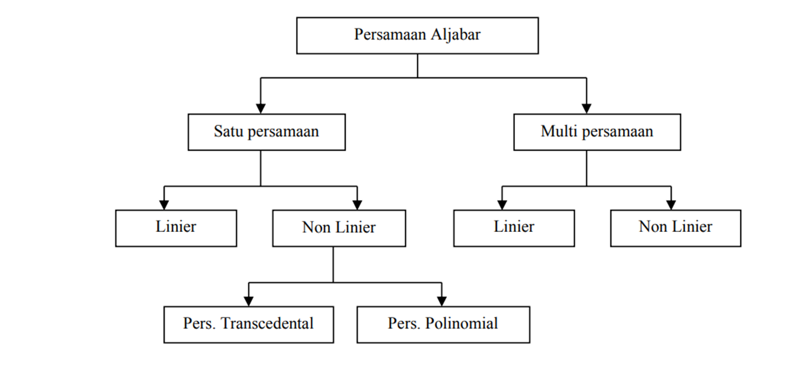

Numerical Solution of Algebraic and Transcendental Equation¶
Metode Numerik adalah teknik dimana masalah aritmatika diformulasikan sedemikian rupa sehingga dapat diselesaikan oleh pengoprasian aritmatika
Sistem persaman aljabar¶

Penyelesaian persamaan non linier¶
Metode Tertutup
Mencari akar pada range [a,b] tertentu
Dalam range[a,b] dipastikan terdapat satu akar
Hasil selalu konvergen → disebut juga metode konvergen
Contohnya Metode Tabel ,Metode Biseksi,Metode Regula Falsi
Metode Terbuka
Diperlukan tebakan awal
xn dipakai untuk menghitung xn+1
Hasil dapat konvergen atau divergen
Contohnya Metode Iterasi Sederhana, Metode Newton-Raphson, Metode Secant.
Metoda Newton-Raphson (atau metoda Newton)¶
Misalkan kita punya persamaan 𝑓(𝑥) = 0 dimana akarnya berada antara (a,b), dan 𝑓(𝑥) adalah persamaan kontinu dan bisa berupa persamaan aljabar atau transcendental. Jika f(a) dan f(b) berlawanan tanda, maka 𝑓(𝑥) = 0 setidaknya akan memiliki satu akar real antara a dan b. Anggap 𝑓(𝑎) positif dan 𝑓(𝑏) negatif, yang mengimplikasikan bahwa setidaknya satu akar berada antara a dan b. Kita asumsikan bahwa akarnya adalah a atau b, yang mana diantara 𝑓(𝑎) atau 𝑓(𝑏) yang nilainya lebih dekat ke nol. Angka tersebut diasumsikan sebagai akar pertama. Kemudian kita iterasi proses tersebut dengan menggunakan persamaan berikut sampai perhitungannya konvergen.
$$ {(𝑋𝑛+1)} = {(𝑋𝑛 −𝑓(𝑋𝑛))} / {(𝑓′(𝑋𝑛))} $$
Langkah langkah¶
-
Cari a dan b dimana 𝑓(𝑎) dan 𝑓(𝑏) berlawanan tanda dengan metoda trial dan error
-
Asumsikan akar awal adalah 𝑋0 = 𝑎, jika nilai 𝑓(𝑎) mendekati nol atau 𝑋0 = 𝑏 jika nilai 𝑓(𝑏) mendekati nol
-
Cari 𝑋1 dengan menggunakan persamaan $$ 𝑋1 = 𝑋0 − 𝑓(𝑋0) 𝑓′(𝑋0) $$
-
Cari 𝑋2 dengan menggunakan persamaan $$ 𝑋2 = 𝑋1 − 𝑓(𝑋1) 𝑓′(𝑋1) $$
-
Cari 𝑋3,𝑋4,…𝑋𝑛 sampai nilai yang dihasilkan sama.
Metode bisection¶
Metode biseksi ini membagi range menjadi 2 bagian, dari dua bagian ini dipilih bagian mana yang mengandung akar sedangkan bagian yang tidak mengandung akar akan dibuang. Hal ini dilakukan berulang-ulang hingga diperoleh suatu akar persamaan

langkah langkah¶
- Tentukan batas bawah (a) dan batas atas (b). Kemudian dihitung nilai tengah :
$$ c = {(a+b)\over 2} $$
- Dari nilai c ini perlu dilakukan pengecekan keberadaan akar. Secara matematik, suatu range terdapat akar persamaan bila f(a) dan f(b) berlawanan tanda atau dituliskan :
$$ f(a).f(b) <0 $$
- Setelah diketahui di bagian mana terdapat akar, maka batas bawah dan batas atas diperbarui sesuai dengan range dari bagian yang mempunyai akar
Algoritma metode bisection¶
1.Definisikan fungsi f(x) yang akan dicari akarnya
2.Tentukan nilai a dan b
3.Tentukan toleransi e dan iterasi maksimum N
4.Hitung f(a) dan f(b)
5.Jika f(a).f(b)>0 maka proses dihentikan karena tidak ada akar, bila tidak maka dilanjutkan
6.Hitung x = (a+b)/2
7.Hitung f(x)
8.Bila f(x).f(a)<0 maka b = x dan f(b)=f(x), bila tidak maka a=x dan f(a)=f(x)
9.Jika |b-a|< e atau iterasi > iterasi maks maka proses dihentikan dan didapatkan akar x, bila tidak, ulangi langkah 6
Implementasi metode bisection dalam python¶
def bisection(f,a,b,N): if f(a)*f(b) >= 0: print("Bisection method fails.") return None a_n = a b_n = b for n in range(1,N+1): m_n = (a_n + b_n)/2 f_m_n = f(m_n) if f(a_n)*f_m_n < 0: a_n = a_n b_n = m_n elif f(b_n)*f_m_n < 0: a_n = m_n b_n = b_n elif f_m_n == 0: print("Found exact solution.") return m_n else: print("Bisection method fails.") return None return (a_n + b_n)/2 f = lambda x: x**2 - 5*x + 6 approx_phi = bisection(f,1,2.3,25) print(approx_phi)
9999999985098835
method Regula Falsi¶
1.Metode pencarian akar persamaan dengan memanfaatkan kemiringan dan selisih tinggi dari dua titik batas range.
2.Dua titik a dan b pada fungsi f(x) digunakan untuk mengestimasi posisi c dari akar interpolasi linier.
3.Dikenal dengan metode False Position
4.Metode ini juga merupakan penyempurna dari metode bisection
Algoritma method regula falsi¶
-
Definisikan fungsi f(x)
-
Tentukan batas bawah (a) dan batas atas (b)
-
Tentukan toleransi error e
-
Hitung f(a) dan f(b)
-
Untuk iterasi 1 s/d n > e : $$ c= {(f(b).a -f(a).b)\over (f(b)-f(a))} $$ Hitung f(c)=f(x)
Hitung error = |f(c)|
Jika f(c). f(a)<0 maka nilai a tetap ,jika tidak maka a=c dan f(a)=f(c)
- Akar persamaanya = c
Implementasi method regula falsi dalam python¶
error = 0.01 a = 0 b = 2.1 def f(x): return x**2 - 5*x + 6 def regulasi_falsi(a,b): i=0 max_iter = 50 iteration = True while iteration and i < max_iter: if f(a)*f(b) < 0: x = (a*abs(f(b)) + b*abs(f(a))) / (abs(f(a)) + abs(f(b))) if f(a)*f(x) < 0: b = x if f(x)*f(b) < 0: a = x if abs(a-b) < error: iteration = False else: i+=1 else: print('tidak di temukan akar') print('x =', x) regulasi_falsi(a,b)
x = 2.000000000174259
Metoda Newton-Raphson (atau metoda Newton)¶
Misalkan kita punya persamaan 𝑓(𝑥) = 0 dimana akarnya berada antara (a,b), dan 𝑓(𝑥) adalah persamaan kontinu dan bisa berupa persamaan aljabar atau transcendental. Jika f(a) dan f(b) berlawanan tanda, maka 𝑓(𝑥) = 0 setidaknya akan memiliki satu akar real antara a dan b. Anggap 𝑓(𝑎) positif dan 𝑓(𝑏) negatif, yang mengimplikasikan bahwa setidaknya satu akar berada antara a dan b. Kita asumsikan bahwa akarnya adalah a atau b, yang mana diantara 𝑓(𝑎) atau 𝑓(𝑏) yang nilainya lebih dekat ke nol. Angka tersebut diasumsikan sebagai akar pertama. Kemudian kita iterasi proses tersebut dengan menggunakan persamaan berikut sampai perhitungannya konvergen.
$$ {(𝑋𝑛+1)} = {(𝑋𝑛 −𝑓(𝑋𝑛))} / {(𝑓′(𝑋𝑛))} $$
Prinsip Metode Newton Raphson¶
Metode Newton-Raphson adalah metode pencarian akar suatu fungsi f(x) dengan pendekatan satu titik, dimana fungsi f(x) mempunyai turunan. Metode ini dianggap lebih mudah dari Metode Bagi-Dua (Bisection Method) karena metode ini menggunakan pendekatan satu titik sebagai titik awal.
Langkah langkah¶
-
Cari a dan b dimana 𝑓(𝑎) dan 𝑓(𝑏) berlawanan tanda dengan metoda trial dan error
-
Asumsikan akar awal adalah 𝑋0 = 𝑎, jika nilai 𝑓(𝑎) mendekati nol atau 𝑋0 = 𝑏 jika nilai 𝑓(𝑏) mendekati nol
-
Cari 𝑋1 dengan menggunakan persamaan $$ 𝑋1 = 𝑋0 − 𝑓(𝑋0) 𝑓′(𝑋0) $$
-
Cari 𝑋2 dengan menggunakan persamaan $$ 𝑋2 = 𝑋1 − 𝑓(𝑋1) 𝑓′(𝑋1) $$
-
Cari 𝑋3,𝑋4,…𝑋𝑛 sampai nilai yang dihasilkan sama.
-
Metode Newton Raphson
Implementasi Metode Newton Raphson python¶
def newton(f,Df,x0,epsilon,max_iter): xn = x0 for n in range(0,max_iter): fxn = f(xn) if abs(fxn) < epsilon: print('Found solution after',n,'iterations.') return xn Dfxn = Df(xn) if Dfxn == 0: print('Zero derivative. No solution found.') return None xn = xn - fxn/Dfxn print('Exceeded maximum iterations. No solution found.') return None p = lambda x: x**2 - 5*x + 6 Dp = lambda x: 2*x - 5 approx = newton(p,Dp,1,1e-3,10) print(approx)
Found solution after 4 iterations. 1.9999847409781035
Metode Secant¶
■Metode Newton Raphson memerlukan perhitungan turunan fungsi f’(x).
■Tidak semua fungsi mudah dicari turunannya terutama fungsi yang bentuknya rumit.
■Turunan fungsi dapat dihilangkan dengan cara menggantinya dengan bentuk lain yang ekivalen
■Modifikasi metode Newton Raphson dinamakan metode Secant.
Formula secant¶
$$ y = \frac{f(b) - f(a)}{b - a}(x - a) + f(a) $$
$$ 0 = \frac{f(b) - f(a)}{b - a}(x - a) + f(a) $$
$$ x = a - f(a)\frac{b - a}{f(b) - f(a)} $$
Algoritma method secant¶
■ Definisikan f(x)
■ Definisikan toleransi error e dan iterasi maksimum (n)
■ Masukan dua nilai pendekatan awal yang diantaranya terdapat akar yaitu x_0 dan x_1 ,sebaiknya gunakan metode tabel untuk menjamin titik pendekatanya adalah titik pendekatan yang konvergensinya pada akar persamaan yang diharapkan.
■ Hitung f(x_0 ) dan fx_1 sebagai y_0 dan y_1
■ Untuk iterasi 1 s/d n $$ x_(i+1)= x_i-(f(xi)(x_i 〖-x〗(i-1)))/(y_i - y(i-1) ) $$
$$ y_(i+1)=〖f(x〗_(i+1)) $$
Akar persamaan adalah nilai x yang terakhir
Implementasi method secant pada python¶
def secant(f,a,b,N): if f(a)*f(b) >= 0: print("Secant method fails.") return None a_n = a b_n = b for n in range(1,N+1): m_n = a_n - f(a_n)*(b_n - a_n)/(f(b_n) - f(a_n)) f_m_n = f(m_n) if f(a_n)*f_m_n < 0: a_n = a_n b_n = m_n elif f(b_n)*f_m_n < 0: a_n = m_n b_n = b_n elif f_m_n == 0: print("Found exact solution.") return m_n else: print("Secant method fails.") return None return a_n - f(a_n)*(b_n - a_n)/(f(b_n) - f(a_n)) p = lambda x: x**2 - 5*x + 6 approx = secant(p,1,2.4,20) print(approx)
2.0000003178913373